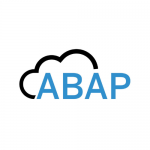
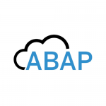
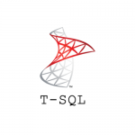
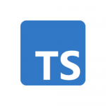
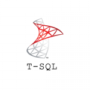
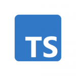

Deploy Quality Software In One Go
Automate Your Code Review Process.
700+ companies are already developing better quality code using Codegrip.
700+ companies are already developing better quality code using Codegrip.
Code Reviews In 3 Clicks

Frictionless Code Reviews
Get automated code review reports after each commit and pull request.
Check codes quality for each branch individually and for the entire project.
Ship quality code faster
Build Secure Software
Find all the vulnerabilities in the code along with the line number, file path, severity, time
estimation, and solution to solve them.
Make sure every software built by you is secure.
Manage Technical Debt
Manage issues with priority using the severity and time information available for each bug and
vulnerability.
Customize code review rule sets to avoid bugs that are not your priority.
Importance of a static code analysis tool!

The most important benefit of static testing is that it saves enterprises valuable time and money,
far offsetting the initial cost to carry it out.
The most important benefit of static testing is that it saves enterprises valuable time and money,
far offsetting the initial cost to carry it out.
The most important benefit of static testing is that it saves enterprises valuable time and money,
far offsetting the initial cost to carry it out.
Codegrip won the 12th Aegis Graham Bell Award For Innovation in Enterprise Automation!

CodeGrip has helped businesses make code review easy and automated. This has helped enterprises
enhance quality and gain a competitive edge.
Aegis Graham Bell award is supported by the Ministry of Electronics and Information Technology,
Government of India; NITI Aayog, Skill India and National Informatics Center Services
Incorporated (NICSI), a Government of India enterprise.
Simplifying Code Reviews

Rule Customization
Customize the code review rule sets to align with the standards you want to follow.
Automatically avoid bugs that are not important to you so that you can concentrate on what matters.
Rule Customization
Customize the code review rule sets to align with the standards you want to follow.
Automatically avoid bugs that are not important to you so that you can concentrate on what matters.

Integrate with Slack
Always stay updated about the progress of your project. Get code quality reports and pull request
notifications automatically in a Slack channel of your choice.

Dashboard View
Manage multiple projects with a dashboard view that provides all information in one place. Track the
improvement in code quality over time with the help of easy to understand parameters and graphs.
20+ Languages Supported for Code review


 


 




Security Standards
Codegrip supports all top security standards.
OWASP TOP 10
OWASP represents a broad consensus about the most critical security risks to web and mobile
applications. It also provides guidance to developers and security professionals on the most
critical vulnerabilities that are commonly found in web applications, which are also easy to
exploit.
SANSTop 25
The SANS Top 25 list is a collection of the 25-most dangerous errors listed in the CWE, as compiled
by the SANS organization. The current SANS list is divided into three categories: Insecure
Interaction Between Components, Risky Resource Management, and Porous Defenses.